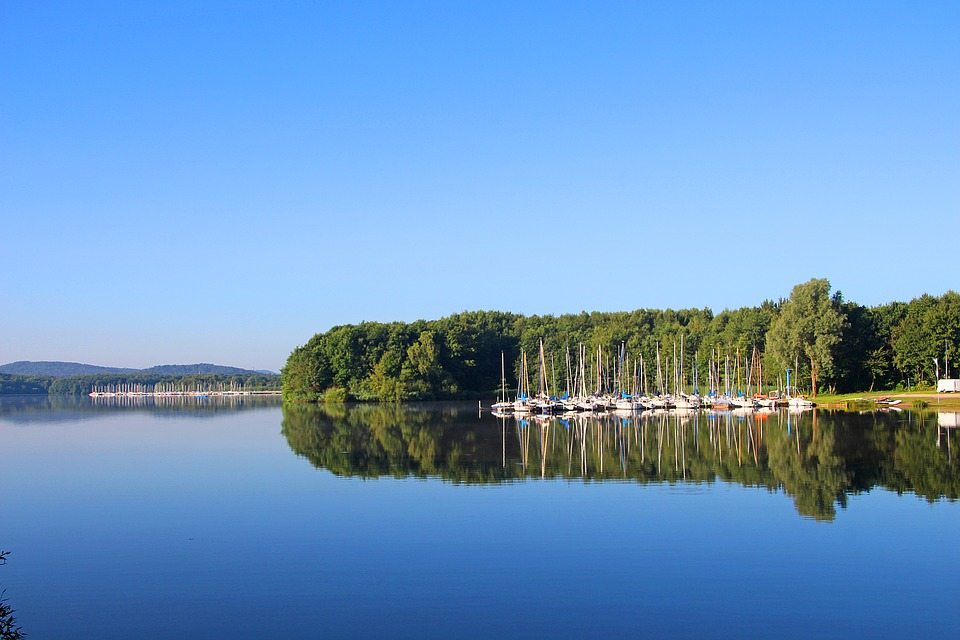

Welcome to my webpage!
We know that our oceans are full of rubbish and plastic. We see it every day at our local beaches. We can all try to help by doing a 2 minute beach clean up of the shore but what if rubbish could be collected at sea like it is on land?
People who care about the sea are trying to come up with new ways to clean up our oceans and harbours. One of these inventions is the seabin. It's a floating bin that can be placed in calm waters such as marinas, docks and ports. It sucks in the water on the surface and with it floating debris, including microplastic, into a catch bag. It does not harm sea creatures. It has a submersible water pump powered by electricity and is capable of displacing 25,000 litres of water per hour. The water is then pumped back into the marina leaving the rubbish trapped inside to be disposed of or hopefully recycled!
The seabin is a clever invention that is starting to be used all over the world to help SAVE OUR SEAS!